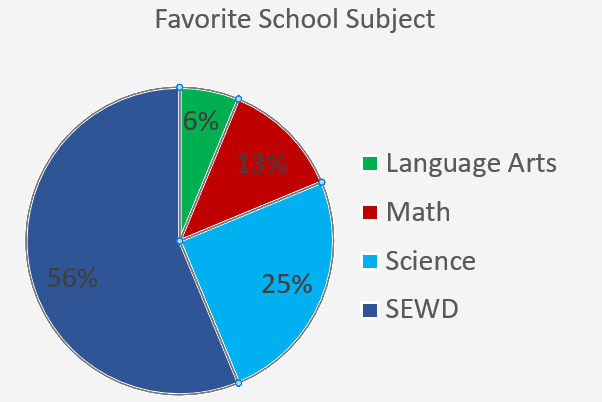

Based on a class vote at a Software engineering class in the medina career center on what classes were the most inspirational.
Fun Fact: Mathmatics, Science, and Language Arts classes tend to be the most inspiring classes for software Engineers which can be shown with the chart.
“Calculus taught me how to break down complex problems into manageable parts. That mindset is everything in software development.” — Priya S., Backend Engineer, India Mathematics instills precision and logic—skills essential for writing efficient algorithms and debugging systems. Science, especially physics and biology, encourages experimentation and systems thinking, helping engineers model real-world problems and build scalable solutions. “Studying biology gave me a deep appreciation for systems—how everything connects. That's exactly how I approach software architecture.” — Luis M., Full Stack Developer, Brazil And perhaps most surprisingly, language arts emerged as a quiet hero. Engineers credited writing and literature classes with teaching them how to communicate clearly, think critically, and empathize with users. “Writing essays helped me learn how to stSructure ideas. Now I write documentation, pitch features, and lead teams with that same clarity.” — Jenna R., Product Engineer, USA These classes didn't just teach skills—they shaped identities. They helped engineers become not just better coders, but better thinkers, collaborators, and creators.